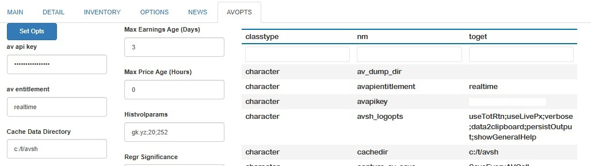
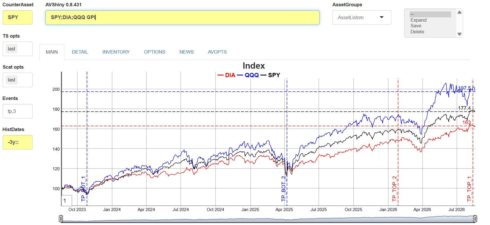
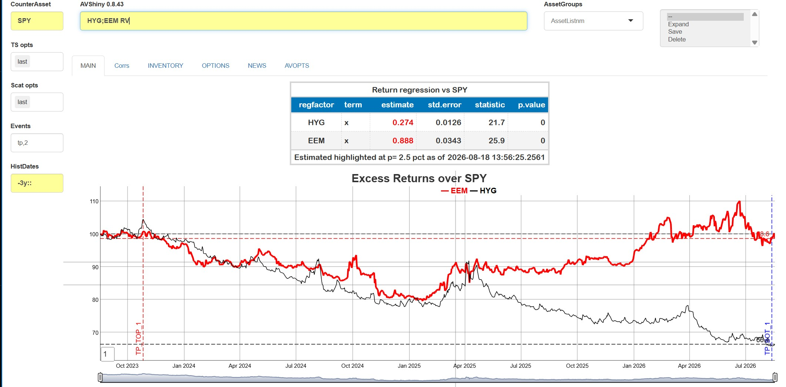
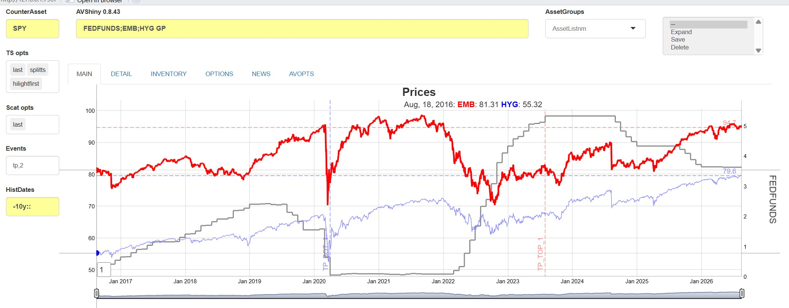

alphavantagepf: A Financial Data Platform
This package contains a comprehensive R and Shiny interface for using, visualizing, and analyzing financial data based on the Alpha Vantage API.
There are two major parts. First, a functional interface and several associated helper functions extracts data directly from API calls, and can be used as a stand-alone source to build a finance data stores.
Those calls are integrated into a Shiny (and functional) interface which seamlessly downloads and manages data across multiple asset classes, including Equities, FX, indices, options or any other user-specified data. Second, a Shiny app (modeled after modern professional tools) with a simple one-line interface can be used to display, visualize and analyze downloaded data. Both user data and user analytics can be added easily.
Installation and First Steps
You can install the development version of alphavantagepf from Github, or the production version from CRAN using either of the following. I’m continually improving the shiny app, so if you are a frequent user, you may want to install the development version.
Load the package.
Set your API key obtained from Alpha Vantage. If you have paid access, include an additional argument with your entitlement status, which is one of two strings “delayed” or “realtime”. “delayed” may be needed for some historical quotes.
avpf_api_key("YOUR_API_KEY","delayed")
print(avpf_api_key())
#> [1] "YOUR_API_KEY" "delayed"If you want to use the Shiny interface, you can launch it using the command av_runShiny(), which will fill in the API keys if they have been set, or direct you to set them if not.
Functional Interfaces
Once the API key has been set, use the function av_get_pf() which requires at minimum two arguments, a symbol (put first to facilitate usage in pipes) and an Alphavantage “function” av_fun.
The symbol parameter is required, but can be a simple empty string for functions that don’t require a symbol, e.g. TOP_GAINERS_LOSERS, or a list of symbols for bulk data, e.g. REALTIME_BULK_QUOTES. Data is turned as a data.table(), with a symbol column if relevant. (Data can be cast into other forms, e.g. tibbles or xts from there.)
Parameters for each call follow exactly the conventions as on the API webav_funhelp().
av_funhelp("TIME_SERIES_INTRADAY")
av_get_pf("IBM","TIME_SERIES_INTRADAY") |> head()
symbol timestamp open high low close volume
<char> <POSc> <num> <num> <num> <num> <int>
1: IBM 2026-01-02 11:00:00 292 293 291 292 141979
2: IBM 2026-01-02 11:15:00 293 293 292 292 117760Additional parameters can be passed both to the API itself (e.g. parameters for technical indicators, or download windows) and to the av_get_pf() function (e.g. verbosity, delays in calls, etc.) See vignette for details.
Extracting data from API calls.
Calls to the API frequently return complex data structures, such as embedded data.frames (for earnings, lists, etc.). Data may be in a format that may not be as useful (e.g. FX) or quite large (e.g. Options). Several helper functions are available to get to the actual data desired. A partial list is
| Function | Description |
|---|---|
| av_extract_df() | Extract an embedded data.table()
|
| av_extract_fx() | Extract FX quotes |
| av_extract_av_extract_divs_or_splits() | Extract Dividends or Splits |
| av_grep_opts() | Filter an option list |
For example, market movers can be extracted in the following way:
av_get_pf("","TOP_GAINERS_LOSERS") |> av_extract_df("top_losers")
<char> <num> <num> <char> <num> <char>
1: OCG 0.0378 -0.0654 -63.3721% 216078762 TOP_GAINERS_LOSERS
2: ZBIO 16.6100 -17.8900 -51.8551% 8034469 TOP_GAINERS_LOSERSor currency quotes using
A powerful interactive interface using Shiny
An interactive Shiny interface is included in the package to manage, analyze and visualize data. Some key features of the interface are:
- The app abstracts out the asset-specific bias of the Alphavantage data. You can analyze a stock, a crypto, and an FX pair all in one line. All price data is collected, cached, and maintained in one data set, which can easily be accessed outside of the app.
-
The app utlizes a single command line to do everything. For example, to plot total returns for four asset classes, just type
NDX;IBM;BTC/USD;USD/BRL GPI. If the data isn’t there, the app gets it from Alpha Vantage API and saves it. If realtime quotes are necessary (and you have the right permissionings), the app gets them automatically. See Usage for further details. -
Typing and mousing are minimized. by using a command lines sets of assets which can be saved and recalled at any time, or added as a
data.frame()externally. - The app is expandable. User time series data can be added using one function, which is then accessible just like any other data. Users can code and add their own analytics, as long as the function returns a list of tables (gt objects), dygraphs, or ggplots. Details are in New Functionality Vignette.
To launch the app, run av_runShiny(), and start with the first step of setting your API key. (See Setup Vignette for other items you can set) Once the API key is set, it’s easy to start building a data set and analyzing it in real time.
Initial setup
The first time av_runShiny() is run, a temporary data directory is created and a local copy of applications defaults (and other data) is created. The app will start in the AVOPTS tab, where you can set up and maintain all aspects of the app behavior.
At a minimum, fill in your API key and permissionings status, unless already saved with avpf_api_key(). By default, all of the data downloaded and used by the app is kept in a default caching directory. I would highly recommend creating a more friendly location for data to be saved, which in the example below is set to a temp directory c:/t/avsh. To change any of the options, set them as needed and hit the Set Opts button. A table showing those selections (along with all other saved internal data) will be shown, with changed options highlighted.
A full description of the options available is given in the options vignette Options Vignette

Now you have the ability to get data form AlphaVantage and can get started with analyses.
Finding and running commands
The app seeks to minimize the amount of typing or mousework to get analyses done by using short commands, with options, that operate on sets of symbols. Critical options are set outside the command line, but overrides after the commands are possible. Commands have one of three forms:
Single name commands do not need any particular set of assets, and all start with the prefix
AV.. The first command you should run isAV.Hto show what commands are available1. Single name commands are used mostly to query the internal state of the app or to remember and recall previous commands.Commands on a list of assets are applied to a semi-colon delimited set of assets, and are of the form
Symbol_1;Symbol_2;...;Symbol_n [Command] [Options]As an example,SPY;DIA;QQQ GPIwill produce a time series graph of total return indices for the three market ETFs listed.Commands on saved asset groups. Groups of assets can be saved as new identifiers by adding a new name of an asset group in the Asset Groups dropdown, and then selecing
Savein the box to the right of that dropdown. Whatever is in the command line will be saved as that new name, which can then be used in place of the list along with any other command. For example, if the asset setSPY;DIA;QQQis saved asmy_indices, then running on the command linemy_indices GPIwill produce the exact same graph as above.
If an asset or commmand is invalid, the app will tell you, otherwise it will download (and save) what it needs using av_get_pf(), save the data and and run the analysis. The app will redownload what it may need to ensure that the most recent value (price) is shown.
For example, to get a simple total return graph of a set of ETFs, just enter QQQ;SPY;DIA;EEM GPI in the yellow line, and get a dygraph (created with fgts_dygraph()):

A brief outline of some of the functions available is shown in the table below. All functions can be seen by running AV.H in the command line.
| Category | Example(s) | Functionality |
|---|---|---|
| Time Series |
QQQ;DIA GPI,SPY GPI2
|
Asset prices or rebased indices, possibly in the middle of the time series |
QQQ GV |
Rolling volatilities | |
| Scatter | QQQ SCATI |
Scatter plot of assets against counterasset |
| Relative Value | QQQ RV |
Active return indices and statistics against counterasset |
| Financials | IBM EA |
Dividends, earnings/transcripts, Descriptions |
| Historical Financials | IBM GEP |
Time series of (e.g.) Earnings Yield |
| News | IBM;MU CN |
Table of news stories, with links |
| Ticker Search | mining S |
Search on symbol or name |
| Options | QQQ OS |
Table of options, implied Vols, etc |
| Miscellaneous |
av.mov,av.inv,av.h
|
Market movers, data inventory, help |
Note that
- Some commands compare the assets in the main line with a counterasset specified in a different box.
- Commands that end in
2put their graphs (etc) below any main graph. This allows two independent time series to be visualized. - Neither commands nor symbols are case sensitive.
As an example, suppose we wish to find simple excess returns (over SPY) and betas for two asset classes proxied by HYG and EEM. Just type in HYG;EEM RV to get:

This app seeks to facilitate quick ad-hoc analyses by minimizing typing and providing command persistence.
Asset Lists are groups of assets saved or recalled by name. To do so, type in your list name in the box to the right of the yellow asset line, and click save. The asset list will be replaced by the new name, and each list name can subsequently be used in lieu of the individual assets for any of the analyses. Internally, the list is expanded to the full set. If you would like to expand the list on the command line, just hit the expand option in the options box.
Command persistence is availble using the
AV.HISTcommands andAV.R <n>commands, which list the last several commands used and recalls them by number.
Data management and adding new commands
Price, dividend and earnings data are all stored internally in data.table() format2, with columns coming directly from relevant the relevant av_get_pf() calls. One of the key contributions of this package is to standardize different Alpha Vantage API output forms into one common format. That effort requires knowing what asset class each ticker belongs to, since there are differnt API calls for each. Asset classes are determined by comparing them with pre-downloaded3 symbol lists, or asssumed to be currencies if they are of the standard [[:alpha:]]*3/[[:alpha:]]*3 format.
Adding data
Those files can be read (and written to) outside the shiny app, so the data can be used for other analyses (e.g. RMarkdown runs) or added to externally as user data or indices. Time series data (kept in a file called avpf_px.fst) can be added using the av_add_px() function. Historical earnings (kept in avpf_earn.fst) or forecasts (kept in avpf_earnest.fst) are managed separately using av_add_earn(). Those functions can be called independently without user data to source the data from Alphavantage. See Data Management Vignette for further details.
As an example, suppose we wish to plot two fixed income ETFs against Fed Funds. We can use e.g. quantmod to download and add the data. All we need to do is ensure that we have the symbol, a Date-classed field and a close field.
suppressMessages(require(quantmod))
ffdta <- as.data.table(quantmod::getSymbols("FEDFUNDS",src="FRED",auto.assign=FALSE))
ffdta <- ffdta[,.(DT_ENTRY=index,close=FEDFUNDS,symbol="FEDFUNDS")]
av_add_px(ffdta)
Getting data and interacting with the app from the console
In addition to reading the price files directly, data can be captured for use in other apps or ad-hoc analyses in in two ways:
Copy to cliboard: Any data that goes into a graph or table is automatically copied to the clipboard if the data2clipboard option is set.
Function call capture: Each individual call to
av_get_pf()can be cached to theAV dump Directorywhich optionally can be set also in AVOPTS. Data is saved in a named (by Alphavantage function) list of data.tables, and can be keyed (and upserted) or appended to a saved.Rdfile. See Data Management Vignette
Running the Shiny app will load all of the data the app has collected up until the invocation of av_runShiny(). However, you may want to load the collected data without actually running the app. To do, run av_load_shinydata(). A list of data collected can be retrieved using dump_state().
Adding new Functionality
New commands can be added by writing yur own functions and “registering” them with the app. New functions have two arguments: (1) a string with the command and any subsequent options, and (2) A list of all current (de-reactive’d) values of the input fields. They must return a (possibly named) list of gt() tables, dygraphs(), or ggplots() to be displayed when the command is run. See New Functionality Vignette